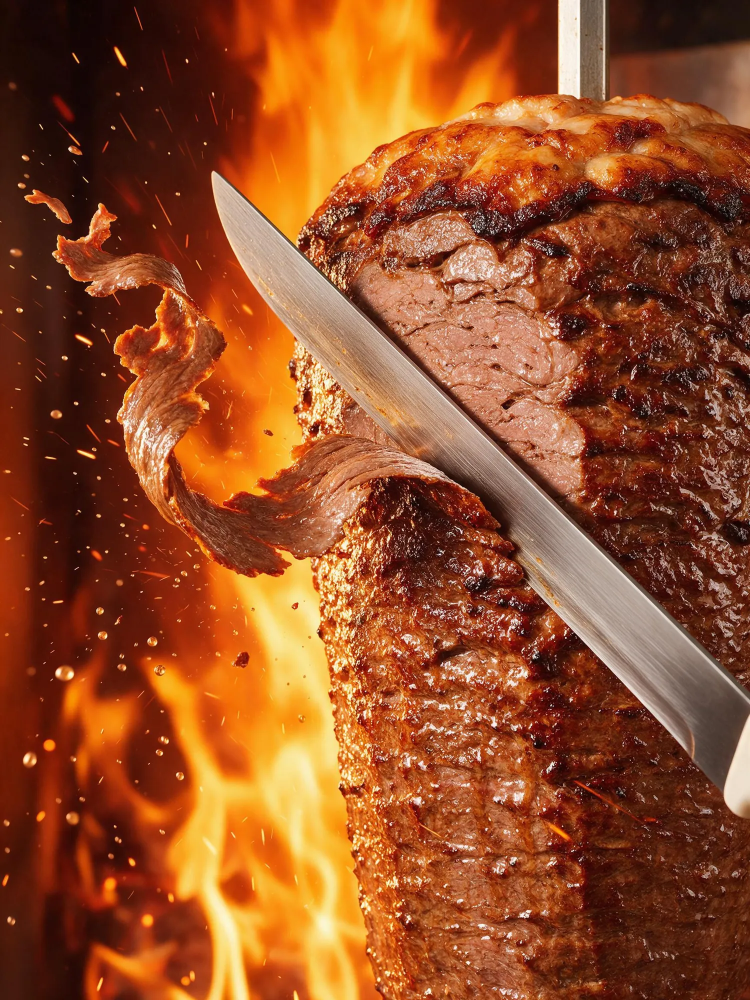
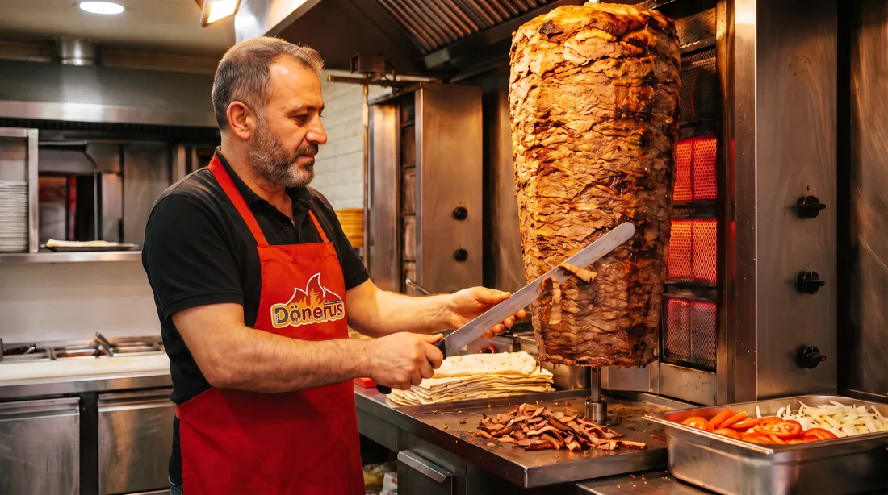
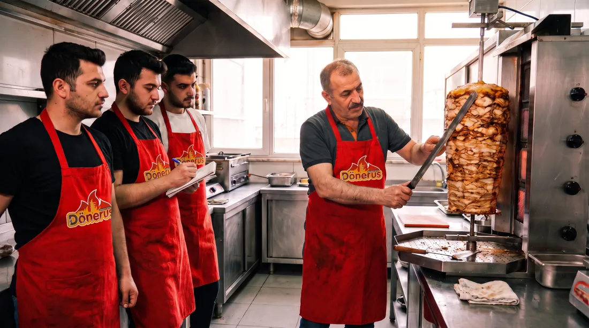

LezzetimizAteşten tabağına,
Ateşten tabağına,
İskenderun usulü.
Sabırla pişen döner, kâğıt inceliğinde dilim, kızgın tereyağı ve bol sos. Dönerus'un lezzeti bu dört şeyin üstüne kurulu.
01 · Pişirme
Döner acele sevmez.
Şiş, ateşin karşısında yavaş yavaş döner; dışı çıtırlaşır, içi sulu kalır. Usta her dilimi ince keser, kenarları kızarmış halde tabağa gelir.

Ocak başıher gün

İmza tabakİskenderun porsiyon
02 · İskenderun usulü
Pide, sos, tereyağı, yoğurt.
İnce dilim döner pidenin üstüne serilir, domates sosla buluşur, kızgın tereyağı masada cızırdar, yanına yoğurt eşlik eder. Lavaşta ya da ekmekte de aynı lezzet.
03 · Ekip
Her şubede aynı lezzet.
Ustalar ve ekipler açılıştan önce eğitimden geçer; tarif, kesim ve servis her şubede aynı standartta uygulanır.
Franchise ailesine katıl →